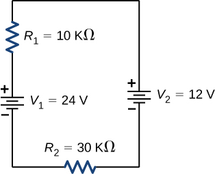
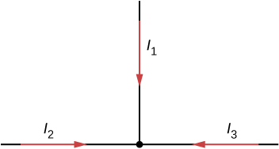
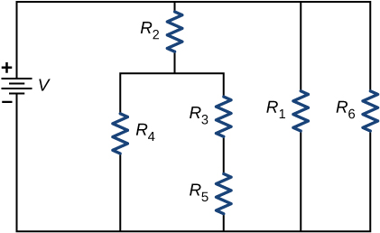
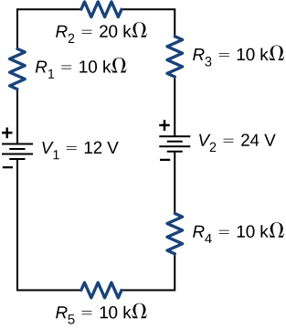
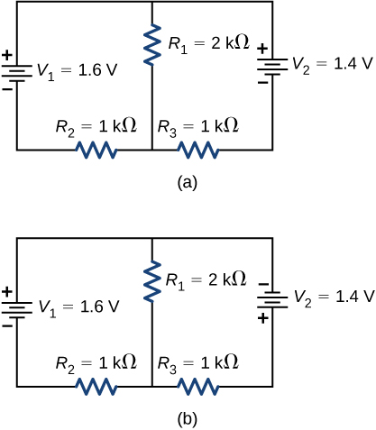
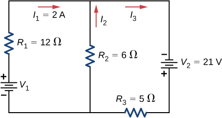
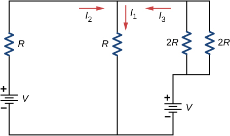

By the end of this section, you will be able to:
We have just seen that some circuits may be analyzed by reducing a circuit to a single voltage source and an equivalent resistance. Many complex circuits cannot be analyzed with the series-parallel techniques developed in the preceding sections. In this section, we elaborate on the use of Kirchhoff’s rules to analyze more complex circuits. For example, the circuit in [link] is known as a multi-loop circuit, which consists of junctions. A junction, also known as a node, is a connection of three or more wires. In this circuit, the previous methods cannot be used, because not all the resistors are in clear series or parallel configurations that can be reduced. Give it a try. The resistors and are in series and can be reduced to an equivalent resistance. The same is true of resistors and . But what do you do then?
Even though this circuit cannot be analyzed using the methods already learned, two circuit analysis rules can be used to analyze any circuit, simple or complex. The rules are known as Kirchhoff’s rules, after their inventor Gustav Kirchhoff (1824–1887).
We now provide explanations of these two rules, followed by problem-solving hints for applying them and a worked example that uses them.
Kirchhoff’s first rule (the junction rule) applies to the charge entering and leaving a junction ([link]). As stated earlier, a junction, or node, is a connection of three or more wires. Current is the flow of charge, and charge is conserved; thus, whatever charge flows into the junction must flow out.
Although it is an over-simplification, an analogy can be made with water pipes connected in a plumbing junction. If the wires in [link] were replaced by water pipes, and the water was assumed to be incompressible, the volume of water flowing into the junction must equal the volume of water flowing out of the junction.
Kirchhoff’s second rule (the loop rule) applies to potential differences. The loop rule is stated in terms of potential V rather than potential energy, but the two are related since In a closed loop, whatever energy is supplied by a voltage source, the energy must be transferred into other forms by the devices in the loop, since there are no other ways in which energy can be transferred into or out of the circuit. Kirchhoff’s loop rule states that the algebraic sum of potential differences, including voltage supplied by the voltage sources and resistive elements, in any loop must be equal to zero. For example, consider a simple loop with no junctions, as in [link].
The circuit consists of a voltage source and three external load resistors. The labels a, b, c, and d serve as references, and have no other significance. The usefulness of these labels will become apparent soon. The loop is designated as Loop abcda, and the labels help keep track of the voltage differences as we travel around the circuit. Start at point a and travel to point b. The voltage of the voltage source is added to the equation and the potential drop of the resistor is subtracted. From point b to c, the potential drop across is subtracted. From c to d, the potential drop across is subtracted. From points d to a, nothing is done because there are no components.
[link] shows a graph of the voltage as we travel around the loop. Voltage increases as we cross the battery, whereas voltage decreases as we travel across a resistor. The potential drop, or change in the electric potential, is equal to the current through the resistor times the resistance of the resistor. Since the wires have negligible resistance, the voltage remains constant as we cross the wires connecting the components.
Then Kirchhoff’s loop rule states
The loop equation can be used to find the current through the loop:
This loop could have been analyzed using the previous methods, but we will demonstrate the power of Kirchhoff’s method in the next section.
By applying Kirchhoff’s rules, we generate a set of linear equations that allow us to find the unknown values in circuits. These may be currents, voltages, or resistances. Each time a rule is applied, it produces an equation. If there are as many independent equations as unknowns, then the problem can be solved.
Using Kirchhoff’s method of analysis requires several steps, as listed in the following procedure.
Let’s examine some steps in this procedure more closely. When locating the junctions in the circuit, do not be concerned about the direction of the currents. If the direction of current flow is not obvious, choosing any direction is sufficient as long as at least one current points into the junction and at least one current points out of the junction. If the arrow is in the opposite direction of the conventional current flow, the result for the current in question will be negative but the answer will still be correct.
The number of nodes depends on the circuit. Each current should be included in a node and thus included in at least one junction equation. Do not include nodes that are not linearly independent, meaning nodes that contain the same information.
Consider [link]. There are two junctions in this circuit: Junction b and Junction e. Points a, c, d, and f are not junctions, because a junction must have three or more connections. The equation for Junction b is , and the equation for Junction e is . These are equivalent equations, so it is necessary to keep only one of them.
When choosing the loops in the circuit, you need enough loops so that each component is covered once, without repeating loops. [link] shows four choices for loops to solve a sample circuit; choices (a), (b), and (c) have a sufficient amount of loops to solve the circuit completely. Option (d) reflects more loops than necessary to solve the circuit.
Consider the circuit in [link](a). Let us analyze this circuit to find the current through each resistor. First, label the circuit as shown in part (b).

Next, determine the junctions. In this circuit, points b and e each have three wires connected, making them junctions. Start to apply Kirchhoff’s junction rule by drawing arrows representing the currents and labeling each arrow, as shown in [link](b). Junction b shows that and Junction e shows that . Since Junction e gives the same information of Junction b, it can be disregarded. This circuit has three unknowns, so we need three linearly independent equations to analyze it.
Next we need to choose the loops. In [link], Loop abefa includes the voltage source and resistors and . The loop starts at point a, then travels through points b, e, and f, and then back to point a. The second loop, Loop ebcde, starts at point e and includes resistors and , and the voltage source .
Now we can apply Kirchhoff’s loop rule, using the map in [link]. Starting at point a and moving to point b, the resistor is crossed in the same direction as the current flow , so the potential drop is subtracted. Moving from point b to point e, the resistor is crossed in the same direction as the current flow so the potential drop is subtracted. Moving from point e to point f, the voltage source is crossed from the negative terminal to the positive terminal, so is added. There are no components between points f and a. The sum of the voltage differences must equal zero:
Finally, we check loop ebcde. We start at point e and move to point b, crossing in the opposite direction as the current flow . The potential drop is added. Next, we cross and in the same direction as the current flow and subtract the potential drops and Note that the current is the same through resistors and , because they are connected in series. Finally, the voltage source is crossed from the positive terminal to the negative terminal, and the voltage source is subtracted. The sum of these voltage differences equals zero and yields the loop equation
We now have three equations, which we can solve for the three unknowns.
To solve the three equations for the three unknown currents, start by eliminating current . First add Eq. (1) times to Eq. (2). The result is labeled as Eq. (4):
Next, subtract Eq. (3) from Eq. (2). The result is labeled as Eq. (5):
We can solve Eqs. (4) and (5) for current . Adding seven times Eq. (4) and three times Eq. (5) results in or Using Eq. (4) results in Finally, Eq. (1) yields One way to check that the solutions are consistent is to check the power supplied by the voltage sources and the power dissipated by the resistors:
Note that the solution for the current is negative. This is the correct answer, but suggests that the arrow originally drawn in the junction analysis is the direction opposite of conventional current flow. The power supplied by the second voltage source is 58 W and not −58 W.
Calculating Current by Using Kirchhoff’s Rules Find the currents flowing in the circuit in [link].
![The figure shows a circuit with three horizontal branches. The first branch has positive terminal of voltage source of 0.5 V connected to resistor R subscript 4 of 2 Ω, the second branch has negative terminal of voltage source of 0.6 V connected to resistor R subscript 3 of 1 Ω and the third branch has positive terminal of voltage source of 2.3 V connected to resistor R subscript 5 of 1 Ω. The left vertical branch has a resistor R subscript 1 of 3 Ω between first two horizontal branches and a resistor R subscript 2 of 5 Ω between the second and third horizontal branches. The right vertical branch is directly connected between first two horizontal branches and has a resistor R subscript 6 of 2 Ω between the second and third horizontal branches.](CNX_UPhysics_27_02_Specified.jpg)
Strategy This circuit is sufficiently complex that the currents cannot be found using Ohm’s law and the series-parallel techniques—it is necessary to use Kirchhoff’s rules. Currents have been labeled and in the figure, and assumptions have been made about their directions. Locations on the diagram have been labeled with letters a through h. In the solution, we apply the junction and loop rules, seeking three independent equations to allow us to solve for the three unknown currents.
Solution Applying the junction and loop rules yields the following three equations. We have three unknowns, so three equations are required.
Simplify the equations by placing the unknowns on one side of the equations.
Simplify the equations. The first loop equation can be simplified by dividing both sides by 3.00. The second loop equation can be simplified by dividing both sides by 6.00.
The results are
Significance A method to check the calculations is to compute the power dissipated by the resistors and the power supplied by the voltage sources:
The power supplied equals the power dissipated by the resistors.
Check Your Understanding In considering the following schematic and the power supplied and consumed by a circuit, will a voltage source always provide power to the circuit, or can a voltage source consume power?
The circuit can be analyzed using Kirchhoff’s loop rule. The first voltage source supplies power: The second voltage source consumes power:
Calculating Current by Using Kirchhoff’s Rules Find the current flowing in the circuit in [link].
Strategy This circuit can be analyzed using Kirchhoff’s rules. There is only one loop and no nodes. Choose the direction of current flow. For this example, we will use the clockwise direction from point a to point b. Consider Loop abcda and use [link] to write the loop equation. Note that according to [link], battery will be added and battery will be subtracted.
Solution Applying the junction rule yields the following three equations. We have one unknown, so one equation is required:
Simplify the equations by placing the unknowns on one side of the equations. Use the values given in the figure.
Significance The power dissipated or consumed by the circuit equals the power supplied to the circuit, but notice that the current in the battery is flowing through the battery from the positive terminal to the negative terminal and consumes power.
The power supplied equals the power dissipated by the resistors and consumed by the battery
Check Your Understanding When using Kirchhoff’s laws, you need to decide which loops to use and the direction of current flow through each loop. In analyzing the circuit in [link], the direction of current flow was chosen to be clockwise, from point a to point b. How would the results change if the direction of the current was chosen to be counterclockwise, from point b to point a?
The current calculated would be equal to instead of The sum of the power dissipated and the power consumed would still equal the power supplied.
Many devices require more than one battery. Multiple voltage sources, such as batteries, can be connected in series configurations, parallel configurations, or a combination of the two.
In series, the positive terminal of one battery is connected to the negative terminal of another battery. Any number of voltage sources, including batteries, can be connected in series. Two batteries connected in series are shown in [link]. Using Kirchhoff’s loop rule for the circuit in part (b) gives the result
When voltage sources are in series, their internal resistances can be added together and their emfs can be added together to get the total values. Series connections of voltage sources are common—for example, in flashlights, toys, and other appliances. Usually, the cells are in series in order to produce a larger total emf. In [link], the terminal voltage is
Note that the same current I is found in each battery because they are connected in series. The disadvantage of series connections of cells is that their internal resistances are additive.
Batteries are connected in series to increase the voltage supplied to the circuit. For instance, an LED flashlight may have two AAA cell batteries, each with a terminal voltage of 1.5 V, to provide 3.0 V to the flashlight.
Any number of batteries can be connected in series. For N batteries in series, the terminal voltage is equal to
where the equivalent resistance is .
When a load is placed across voltage sources in series, as in [link], we can find the current:
As expected, the internal resistances increase the equivalent resistance.
Voltage sources, such as batteries, can also be connected in parallel. [link] shows two batteries with identical emfs in parallel and connected to a load resistance. When the batteries are connect in parallel, the positive terminals are connected together and the negative terminals are connected together, and the load resistance is connected to the positive and negative terminals. Normally, voltage sources in parallel have identical emfs. In this simple case, since the voltage sources are in parallel, the total emf is the same as the individual emfs of each battery.
Consider the Kirchhoff analysis of the circuit in [link](b). There are two loops and a node at point b and .
Node b: .
Loop abcfa:
Loop fcdef:
Solving for the current through the load resistor results in , where . The terminal voltage is equal to the potential drop across the load resistor . The parallel connection reduces the internal resistance and thus can produce a larger current.
Any number of batteries can be connected in parallel. For N batteries in parallel, the terminal voltage is equal to
where the equivalent resistance is .
As an example, some diesel trucks use two 12-V batteries in parallel; they produce a total emf of 12 V but can deliver the larger current needed to start a diesel engine.
In summary, the terminal voltage of batteries in series is equal to the sum of the individual emfs minus the sum of the internal resistances times the current. When batteries are connected in parallel, they usually have equal emfs and the terminal voltage is equal to the emf minus the equivalent internal resistance times the current, where the equivalent internal resistance is smaller than the individual internal resistances. Batteries are connected in series to increase the terminal voltage to the load. Batteries are connected in parallel to increase the current to the load.
Another example dealing with multiple voltage sources is that of combinations of solar cells—wired in both series and parallel combinations to yield a desired voltage and current. Photovoltaic generation, which is the conversion of sunlight directly into electricity, is based upon the photoelectric effect. The photoelectric effect is beyond the scope of this chapter and is covered in Photons and Matter Waves, but in general, photons hitting the surface of a solar cell create an electric current in the cell.
Most solar cells are made from pure silicon. Most single cells have a voltage output of about 0.5 V, while the current output is a function of the amount of sunlight falling on the cell (the incident solar radiation known as the insolation). Under bright noon sunlight, a current per unit area of about of cell surface area is produced by typical single-crystal cells.
Individual solar cells are connected electrically in modules to meet electrical energy needs. They can be wired together in series or in parallel—connected like the batteries discussed earlier. A solar-cell array or module usually consists of between 36 and 72 cells, with a power output of 50 W to 140 W.
Solar cells, like batteries, provide a direct current (dc) voltage. Current from a dc voltage source is unidirectional. Most household appliances need an alternating current (ac) voltage.
Can all of the currents going into the junction shown below be positive? Explain.
Consider the circuit shown below. Does the analysis of the circuit require Kirchhoff’s method, or can it be redrawn to simplify the circuit? If it is a circuit of series and parallel connections, what is the equivalent resistance?
It can be redrawn.
Do batteries in a circuit always supply power to a circuit, or can they absorb power in a circuit? Give an example.
What are the advantages and disadvantages of connecting batteries in series? In parallel?
In series the voltages add, but so do the internal resistances, because the internal resistances are in series. In parallel, the terminal voltage is the same, but the equivalent internal resistance is smaller than the smallest individual internal resistance and a higher current can be provided.
Semi-tractor trucks use four large 12-V batteries. The starter system requires 24 V, while normal operation of the truck’s other electrical components utilizes 12 V. How could the four batteries be connected to produce 24 V? To produce 12 V? Why is 24 V better than 12 V for starting the truck’s engine (a very heavy load)?
Consider the circuit shown below. (a) Find the voltage across each resistor. (b)What is the power supplied to the circuit and the power dissipated or consumed by the circuit?
Consider the circuits shown below. (a) What is the current through each resistor in part (a)? (b) What is the current through each resistor in part (b)? (c) What is the power dissipated or consumed by each circuit? (d) What is the power supplied to each circuit?
a. ;
b. ; c. ;
d.
Consider the circuit shown below. Find
Consider the circuit shown below. Find
![The figure shows a circuit with three horizontal branches. The first branch has resistor R subscript 1 of 6 Ω with right current I subscript 1 of 4 A. The second branch has resistor R subscript 2 of 4 Ω with left current I subscript 2 of 3 A and resistor R subscript 3 of 6 Ω with left current I subscript 3 of 1 A. The third branch has resistor R subscript 5 of 4 Ω with left current I subscript 5 of 3 A. The first and second horizontal branches are connected on the right directly and on the left with voltage source V subscript 1 with positive terminal connected to first branch. The second and third horizontal branches are connected on the right directly and on the left with resistor R subscript 4 with upward current I subscript 4 of 1 A. The second and third branches are also connected in the middle with a voltage source V subscript 2 with positive terminal connected to second branch.](CNX_UPhysics_27_02_Prob4_img.jpg)
Consider the circuit shown below. Find

Consider the circuit shown below. (a) Find (b) Find the power supplied by the voltage sources. (c) Find the power dissipated by the resistors.
![The circuit has four vertical branches. From left to right, first branch has voltage source V subscript 1 of 12 V with positive terminal upward. The second branch has resistor R subscript 1 of 4 Ω with downward current I subscript 1. The third branch has voltage source V subscript 2 of 5 V with positive terminal upward and upward current I subscript 5. The fourth branch has resistor R subscript 4 of 2 Ω with downward current I subscript 4. The first and second branch are connected at the bottom through resistor R subscript 2 of 3 Ω with left current I subscript 2 and second and third branch are connected at the bottom through resistor R subscript 3 of 2 Ω with left current I subscript 3.](CNX_UPhysics_27_02_Prob6_img.jpg)
a. ; b. ;
c.
Consider the circuit shown below. Write the three loop equations for the loops shown.
![The circuit has four vertical branches. From left to right, first branch has voltage source V subscript 1 with positive terminal upward. The second branch has resistor R subscript 2 with downward current I subscript 2. The third branch has voltage source V subscript 2 with positive terminal upward and downward current I subscript 2. The fourth branch has resistor R subscript 5 with downward current I subscript 5. The first and second branch are connected at the bottom through resistor R subscript 1 and second and third branch are connected at the bottom through resistor R subscript 4 with left current I subscript 4. The second and third branch are connected at the top through resistor R subscript 3 with left current I subscript 3. The current at the top between first and second branch is right I subscript 1.](CNX_UPhysics_27_02_Prob7_img.jpg)
Consider the circuit shown below. Write equations for the three currents in terms of R and V.
Consider the circuit shown in the preceding problem. Write equations for the power supplied by the voltage sources and the power dissipated by the resistors in terms of R and V.
A child’s electronic toy is supplied by three 1.58-V alkaline cells having internal resistances of in series with a 1.53-V carbon-zinc dry cell having a internal resistance. The load resistance is . (a) Draw a circuit diagram of the toy and its batteries. (b) What current flows? (c) How much power is supplied to the load? (d) What is the internal resistance of the dry cell if it goes bad, resulting in only 0.500 W being supplied to the load?
a.
;
b. 0.617 A; c. 3.81 W; d.
Apply the junction rule to Junction b shown below. Is any new information gained by applying the junction rule at e?
![The circuit has three vertical branches. From left to right, first branch has voltage source ε subscript 1 of 18 V and internal resistance 0.5 Ω with positive terminal upward. The second branch has resistor R subscript 2 of 6 Ω with downward current I subscript 3 and voltage source ε subscript 2 of 3 V and internal resistance 0.25 Ω with positive terminal downward. The third branch has voltage source ε subscript 3 of 12 V and internal resistance 0.5 Ω with positive terminal downward. The first and second branch are connected at the top through resistor R subscript 1 of 20 Ω with right current I subscript 1 and bottom through resistor R subscript 4 of 15 Ω. The second and third branch are connected at the top through resistor R subscript 3 of 8 Ω with right current I subscript 2 and bottom through voltage source ε subscript 4 of 18 V with right positive terminal and internal resistance 0.75 Ω.](CNX_UPhysics_27_03_P10_img.jpg)
Apply the loop rule to Loop afedcba in the preceding problem.